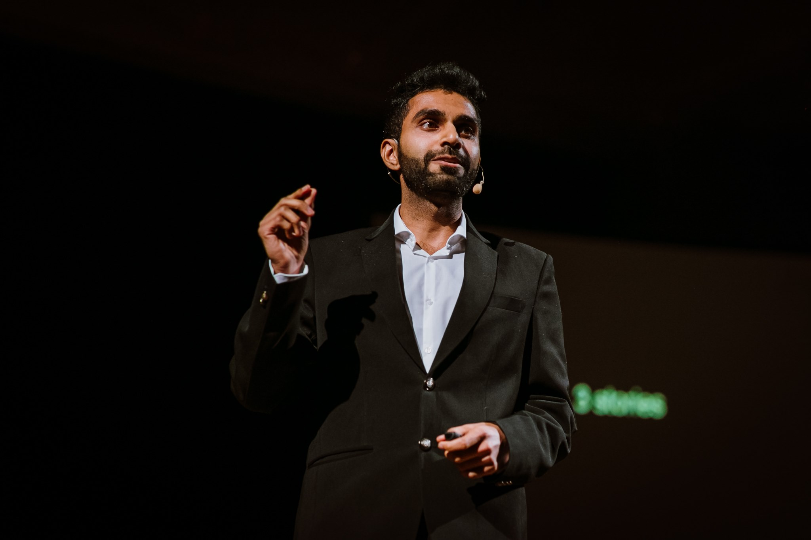
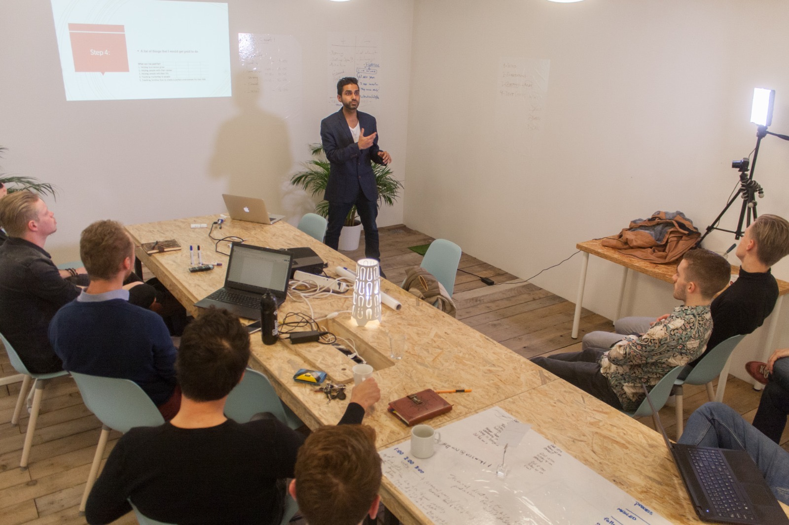
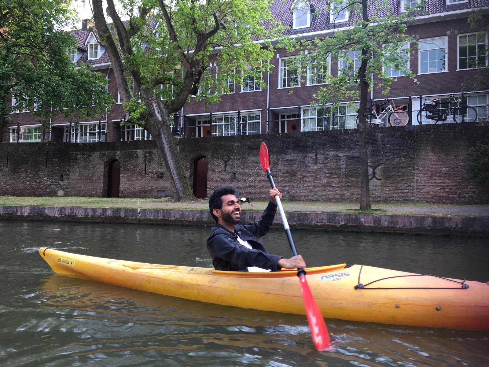

01
Growth
What actually moves the needle when the easy levers are gone. Acquisition, retention, the math of compounding when budgets stop scaling.
Three TEDx talks. Fifty-plus keynotes. Fourteen countries. One operator with a microphone.
I'm a DTC and performance marketing leader who picked up a microphone in 2014 and never put it down.
Three TEDx stages across Europe. Fifty-plus keynotes in fourteen countries, across four continents. Conferences from Asia Pacific Digital Marketing Conclave to Russian Stream Conference, plus founder summits, corporate offsites, and fireside chats in between.
Every talk is written fresh from what I've shipped — growth, marketing, and the operator mindset. What worked, what failed publicly, and the unglamorous middle that separates the two.





5 of 50+ moments · stages, workshops, and the road in between
What actually moves the needle when the easy levers are gone. Acquisition, retention, the math of compounding when budgets stop scaling.
DTC, performance, brand. Built for operators who have to sell — not for VPs who get to delegate.
Founding, shipping, and failing in public. The unglamorous middle between a great idea and a real business.